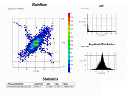
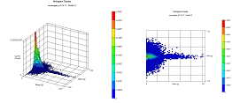
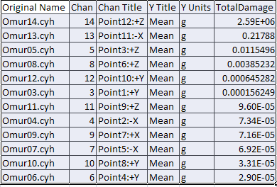
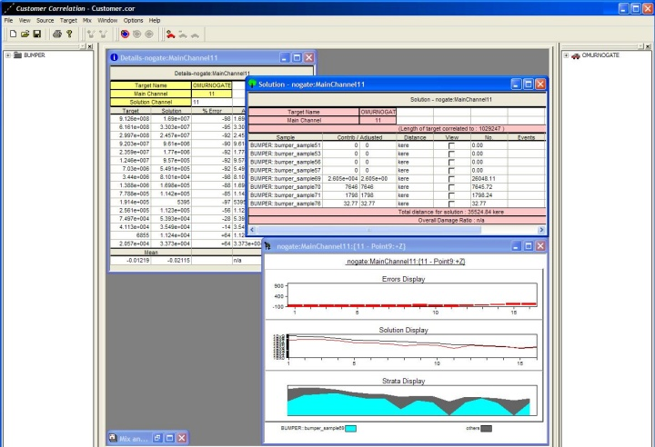
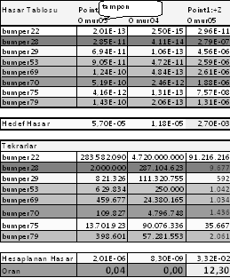

|
5. Verilerin iþlenmesi
Tarla, yol ve test pisti verilerinin genlik ve frekans spektrumlarýný Þekil 11'deki gibi incelenmiþtir. Her bir ölçüm için:
- Frekans spektrumu çýkarýlmýþtýr
- Genlik spektrumu çýkarýlmýþtýr
- Rainflow matrisi hesaplanmýþtýr
Traktörün normal þartlar altýnda ömrü boyunca maruz kalacaðý hasar etkisini oluþturmak amacýyla tarla ve yoldan toplanan deðerler sýnýflandýrýlarak traktör üzerine gelen yük daðýlýmlarýnýn görüldüðü Rainflow matrisler haline getirilmiþtir.

Þekil 11. Saha Testlerine Örnek Frekans Spektrumu
Traktör çalýþma çevrimine göre;
- Yol için deðiþkenler
- Yük
- Hýz
- Yol koþulu
- Tarla için deðiþkenler
- Kullaným amacý
Hýzlandýrýlmýþ testte tekrar edilmesi için her bir çalýþmanýn ayrý ayrý hasar etkileri çýkarýlmýþtýr. Her bir tarla ve yol ölçümünün rainflow matrisi çalýþma çevrimine uygun þekilde tekrarlarý kadar çarpýlarak toplam hedef matrisi toplanýr.

Þekil 12. Toplanan Veriler için Örnek Rainflow Matris

Tablo 3. S-N yöntemiyle tüm 12 ivme kanalýnýn Hedef Rainflow Matrisi hasar deðeri hesaplandý.
Tablo 3'de görüldüðü gibi, saha testleri verileri için yapýlan çalýþmalar test pisti verileri için de yapýldý.
Test pisti verileri için Histogram eþleþtirme ve hasar kontrolü yapýldý (Þekil 13). Histogram Eþleþtirme; Program saha ve Test Pisti rainflow matrislerinin her bir kutucuðunu eþitlemeye çalýþýr. Buna göre hangi Test Pistinden kaç adet tekrarlanmasý gerektiðini bulundu. Hasar Kontrolü; Eþleþtirme sonucunda her kanalýn Test Pisti çalýþma çevrimi toplam hasarý ile hedef ömür hasarlarý karþýlaþtýrýldý.

Þekil 13. Hasar Eþleþtirme Çalýþmasý
Tam otomatik bir þekilde istenen sonuca ulaþýlamamýþtýr fakat yarý otomatik þekilde hýzlandýrýlmýþ test þartlarý oluþturulmuþtur. En doðru sonuç için hangi test pisti çalýþmalarýnýn seçileceði manüel olarak belirlenmiþtir.

Tablo 4. Hesaplanan Hasar ve Eþdeðer Hasar Tablosu
6. Sonuç
Bu çalýþma, araç geliþtirme çalýþmalarýna ve ürün geliþtirme hýzýnýn artmasýna saðlayacaðý katký; ARGE maliyetlerinde saðlayacaðý azalma göz önüne alýndýðýnda oldukça önemli bir çalýþmadýr.
Gerçek saha þartlarýnda traktörün çalýþmasý deðiþken olacaðýndan, maruz kalýnan gerilmelerin hakkýnda bir sýralama belirlemek yanlýþ olur. Traktör çalýþmasý için en uygun çözümü Palmgren-Miner yöntemi verecektir. Çünkü Palmgren-Miner yöntemi gerilmelerin nasýl dizildiðine önem vermemektedir ve gerçek þartlarda çalýþmalarda maruz kalýnan gerilmeler karýþýk sýralandýðý için en uygun çözüm bu yöntem çýkmaktadýr. Diðer yöntemlerde gerilme sýralanýþlarýna önem vermektedir, yani küçükten büyüðe veya büyükten küçüðe sýralama durumunu sunmaktadýrlar ki bu durum da traktör çalýþma durumuna uymamaktadýr. Sonuç olarak Palmgren-Miner'in verdiði ömürler esas kabul edilecektir.
Bu yönteme göre çýkarýlan eþdeðer hasarlar Tablo 4'de görülmektedir. Hesaplanan hasar etkisini oluþturmak için Tablo 4'deki çalýþma þartlarý istenilen deðerlerde seçilerek toplam test süresi ayarlanabilir. Bu tablo sayesinde traktörün ömrü boyunca maruz kalacaðý çalýþma þartlarý sonucunda oluþacak yorulma etkisinin saptanarak ayný etkiyi oluþturacak test þartlarýnýn belirlenmesi suretiyle deney süresi istenilen oranda ayarlanabilmektedir.
Hýzlandýrýlmýþ ömür testine tabi tutulan araçlarda görülen aksaklýklar; araç üzerinde bulunan parçalarýn titreþim deformasyonuna karþý analizi kýsa sürede yapýlmak suretiyle, önleminin hemen alýnmasý sonucunda aracýn kýsa sürede geliþtirilip piyasaya çýkmasý açýsýndan oldukça önemlidir.
Tasarlanan ürün kullanýcý profillerine uygun olarak üretilecek olmasý sebebi ile ürün maliyetlerinde de azalma söz konusudur.
Sonuç olarak, traktör saha testleri normal þartlar altýnda 2000 saatlik bir çalýþma ile yapýlmaktaydý. Çok uzun zaman almasýnýn yanýnda iþçilik, yakýt, yað, ekipman ve diðer gerekli malzemeleri düþündüðümüzde yüksek maliyet söz konusudur. Bu çalýþma ile 2000 saatlik saha testi yerine saha testine eþdeðer hasar oluþturabilen test pisti ile toplam 100 saatte bu testi simule etmekteyiz. Yukarýda bahsedilen malzeme ve iþçilik ücretlerinden kazanç saðlandýðý gibi test süresi 1:20 oranýnda kýsaltýlarak test sonucunun daha erken alýnmasý saðlanmýþtýr. Bu þekilde Ürün Geliþtirme süreci de kýsaltýlmýþtýr.
|